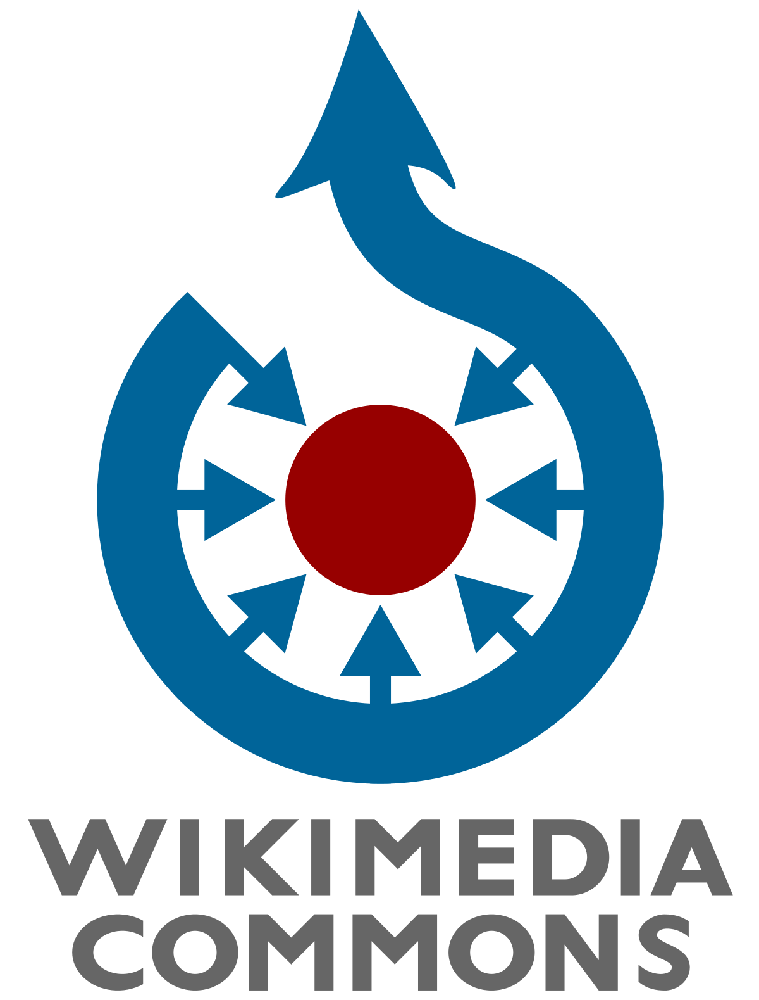
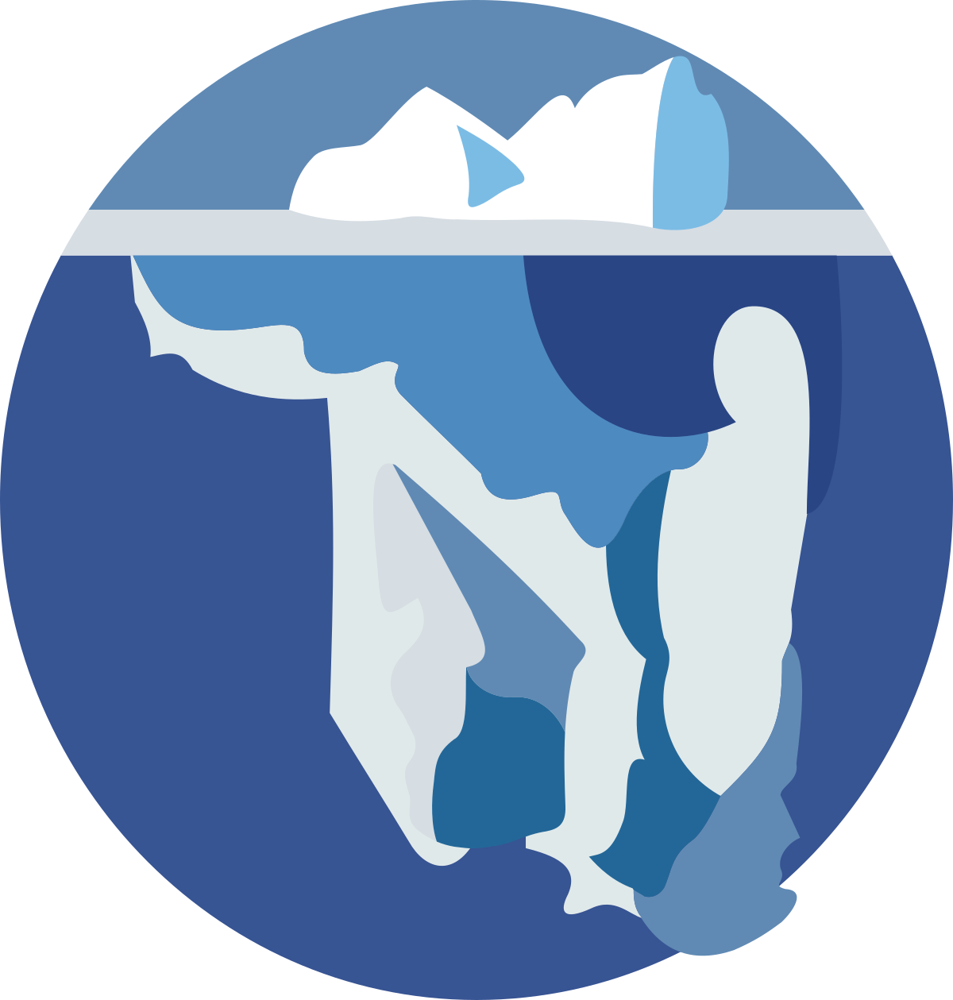

Wikipedia es alojada por la Fundación Wikimedia, una organización sin fines de lucro que también alberga una gama de otros proyectos.

Commons
Fotos libremente utilizables y más

Wikiviajes
La guía de viajes libre
Wikcionario
El diccionario libre
Wikilibros
Libros de contenido libre

Wikinoticias
La fuente de noticias libres

Wikidata
Base de conocimiento libre
Wikiversidad
Plataforma eductiva libre
Wikiquote
La colección de citas
Mediawiki
Aplicación wiki libre y abierta

Wikisource
La biblioteca libre
Wikispecies
Directorio de especies libre
Meta-wiki
Coordinación y documentación comunitaria
Descargar Wikipedia para Android o IOS
Guarda tus artículos favoritos para leerlos sin conexión, sincroniza tus listas de lectura en varios dispositivos y personaliza tu experiencia de lectura con la aplicación oficial de Wikipedia.